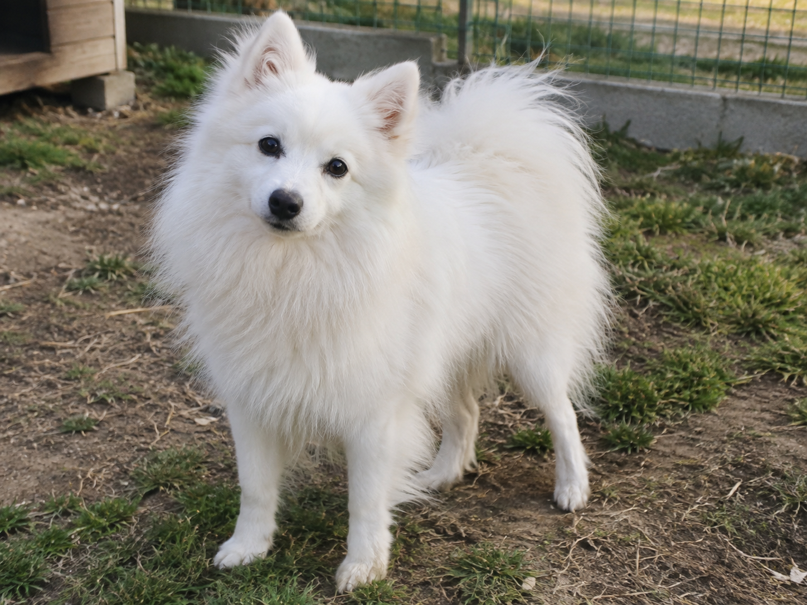

Немного о нас

Питомник Sunny Paws занимается разведением японских шпицев. Основное внимание уделяется здоровью производителей, условиям содержания и ранней социализации щенков.
Мы предпочитаем небольшое количество помётов, чтобы можно было уделять достаточно времени каждой собаке. Щенки растут рядом с людьми и с первых недель привыкают к обычной домашней среде.
Как растут щенки
- осмотр и вакцинация по возрасту;
- постепенное знакомство с людьми и окружающей средой;
- игры и простые развивающие занятия;
- первые навыки спокойного поведения;
- рекомендации владельцу по адаптации щенка дома.
Особенности породы
Японские шпицы известны белой густой шерстью, аккуратной внешностью и внимательным характером. Они любят быть рядом с человеком, нуждаются в регулярных прогулках и обычном уходе за шерстью.